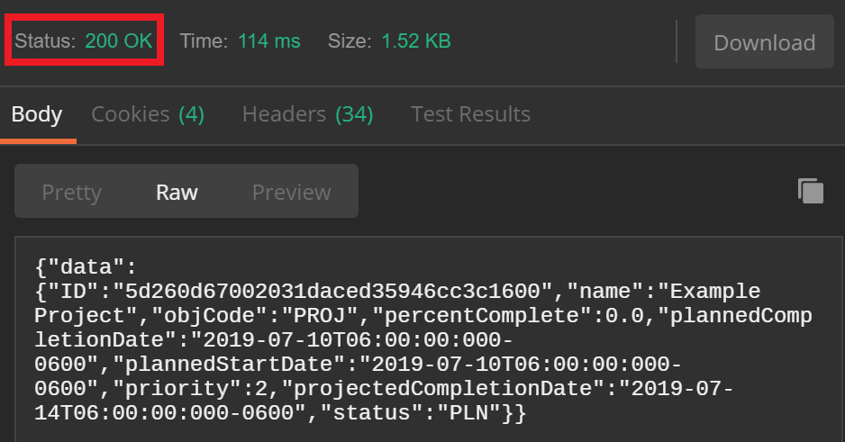
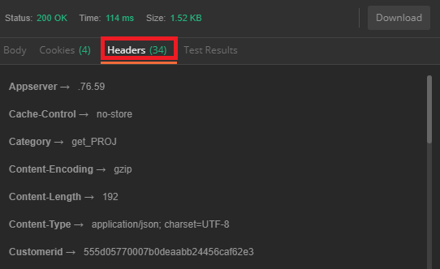
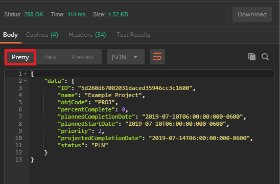
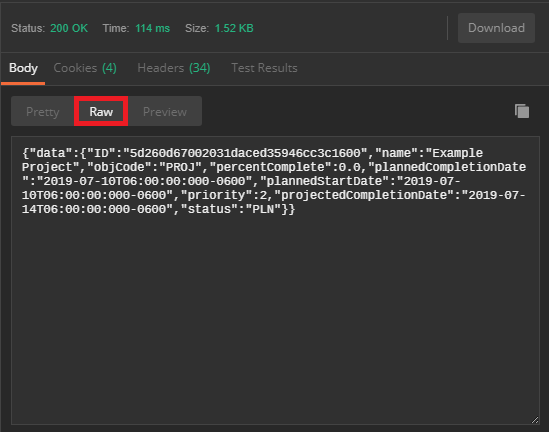

After making a request the API server will return an HTTP Response:
In Postman, the status code is summarized in a menu, separate from the header and the body:

The header information can be accessed by selecting the "headers" option underneath the status code display:

The Workfront API servers return responses in JSON, generally following the structure outlined above. Depending on what type of client you're using, the aesthetic of returns vary, but the information that is returned is identical. By default, Postman returns JSON repsonses in a 'pretty' format with the header information separated out into a different tab from the body.
Here is an example of a response from the Workfront API. This is a request made to view the details of a particular project.
General request:
Specific request for this example:
This is an unedited response from the Workfront API servers:
Notice that this exact same information can be formatted differently, to make it easier to read. In this case, line breaks are used to separate the project details:
{
"data": {
"ID": "5d260d67002031daced35946cc3c1600",
"name": "Example Project",
"objCode": "PROJ",
"percentComplete": 0,
"plannedCompletionDate": "2019-07-10T06:00:00:000-0600",
"plannedStartDate": "2019-07-10T06:00:00:000-0600",
"priority": 2,
"projectedCompletionDate": "2019-07-14T06:00:00:000-0600",
"status": "PLN"
}
}
This is what the Postman return looks like for the same GET request described above. The color coding, line breaks, and spacing automatically applied in the "Pretty" formatting option make the response easier to read and interpret.

The "raw" format option in Postman will return identical information to the pretty format, however there will be no spacing and no color coding.

The response that you receive back from the Workfront API servers is the information that you'll use to create your program. Every time that you make a request to the API servers, you receive a response in the same format. Knowing this, you can construct code to automatically parse through the response, select the data that you want, then print that data to a file, publish it to a website, or anything else that you need your program to do.